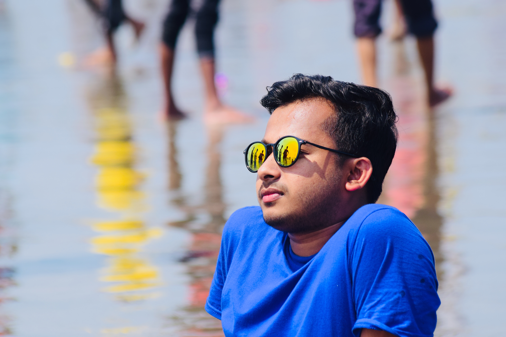

Masum Ahmed
Web Designer & Developer
Hey, this is my homepage, so I have something to say about myself. My name is Masum ahmed. About 22 and I live in Dhaka which is the capital of Bangladesh. Actually I came from another city - Narsingdi, where I lived for eighteen years, but three years ago, my dad decided to admit me to university, and I moved to Dhaka.Interested in computer science, music, sport. computers first came into my life when I was fifteen. Then I got my first computer. At first, I was just playing computer games, but after some time, I noticed that I could do a lot more things with the computer, for example programming. Now, I can already program in C, C ++ and HTML. I have my own site on the internet and I have done many programes. I hope that in the future I will get a job as a computer scientist.
